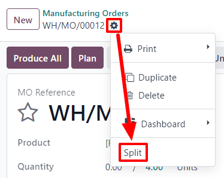

Split and merge manufacturing orders¶
In Odoo Manufacturing, it is possible to create manufacturing orders for a single unit of an item, or multiple units of the same item. In some cases, it may be necessary to split a manufacturing order that contains multiple units into two or more orders, or to merge two or more orders into a single order.
Important
A manufacturing order can only contain one unit of a product, or multiple units of a single product that all use the same Bill of Materials (BoM). As a result, it is only possible to merge manufacturing orders when every order contains the same product being manufactured with the same BoM.
Split manufacturing orders¶
To split a manufacturing order into multiple orders, begin by navigating to , then select a manufacturing order. At the top of the page, next to the New button, the manufacturing order’s reference number appears with a ⚙️ (settings) button next to it.
Click the ⚙️ (settings) button to open the general settings for the manufacturing order, then select Split.
After selecting Split, a Split production pop-up window appears. In the Split # field, enter the number of manufacturing orders that the original order should be split into, then click outside of the field. A table appears below, with a line for each new manufacturing order that will be created by the split. In the Quantity To Produce column, enter the number of units that will be assigned to each new manufacturing order. Finally, click Split to split the manufacturing order.

After clicking Split, the original manufacturing order is split into the number of orders that was specified in the Split # field. The reference numbers for the new manufacturing orders are the reference number for the original order with -### tags added to the end.
Example
Manufacturing order WH/MO/00012 is split into three separate orders. The reference numbers for the new orders are WH/MO/00012-001, WH/MO/00012-002, and WH/MO/00012-003.
Merge manufacturing orders¶
To merge two or more manufacturing orders into a single order, begin by navigating to . Select the manufacturing orders that will be merged by activating the checkbox to the left of the name of each order.

Once all manufacturing orders have been selected, click the Actions button at the top of the page, then select Merge from the drop-down menu.

The selected manufacturing orders are merged into a single order. The reference number for the new manufacturing order is the next sequential number that has not already been assigned to an order.
Example
The last reference number used for a manufacturing order was WH/MO/00012. Two manufacturing orders, WH/MO/00008 and WH/MO/00009, are merged into a single order. The reference number for the manufacturing order created by the merger is WH/MO/00013.
In the Source field for the manufacturing order created by the merger, the reference numbers of the manufacturing orders that were merged are listed.
Example
Manufacturing orders WH/MO/00009 and WH/MO/00010 are merged to create WH/MO/00011. The source field for WH/MO/00011 lists both WH/MO/00009 and WH/MO/00010.